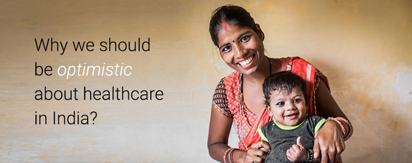

|
Hello Pooja,
Welcome to the first issue of Aksha Dialogues - a monthly newsletter from the India office of the Bill
& Melinda Gates
Foundation.
Every month, we will share opinions, research and news across themes in Health, Sanitation,
Agricultural Development,
Financial Inclusion and Gender Equality. Our purpose is to keep our stakeholders and readers informed,
involved and
engaged with critical issues impacting India’s health and social development.
|
|
|

|
|
Ansari Hasina with her membership
card at a community toilet built by
SPARC in the Shivaji Nagar 2 slum in
the Govandi locality of Mumbai
|
|
|